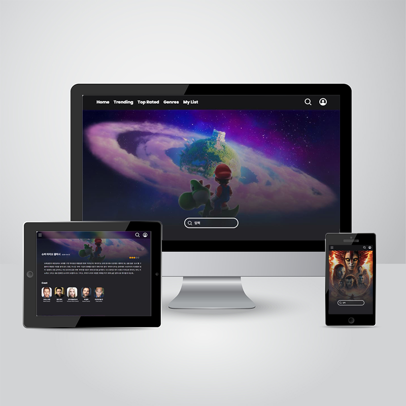
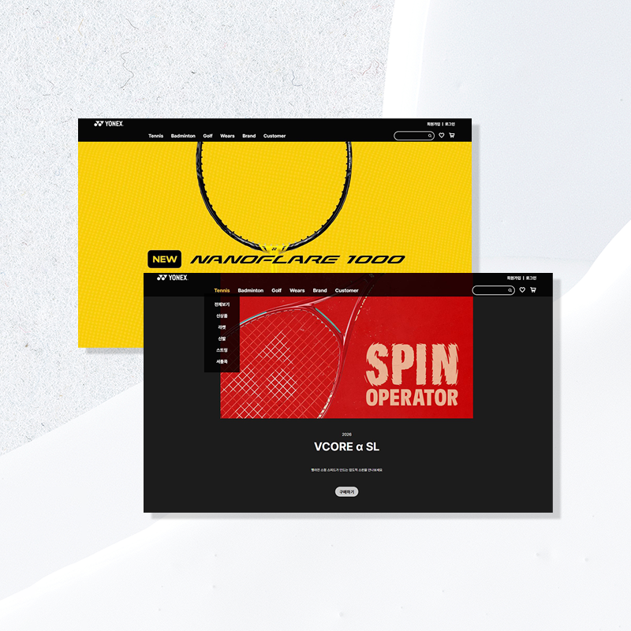
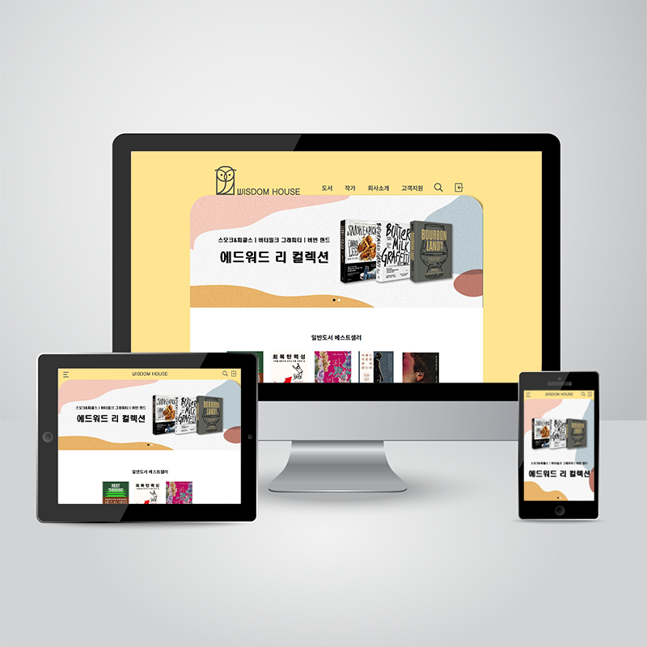
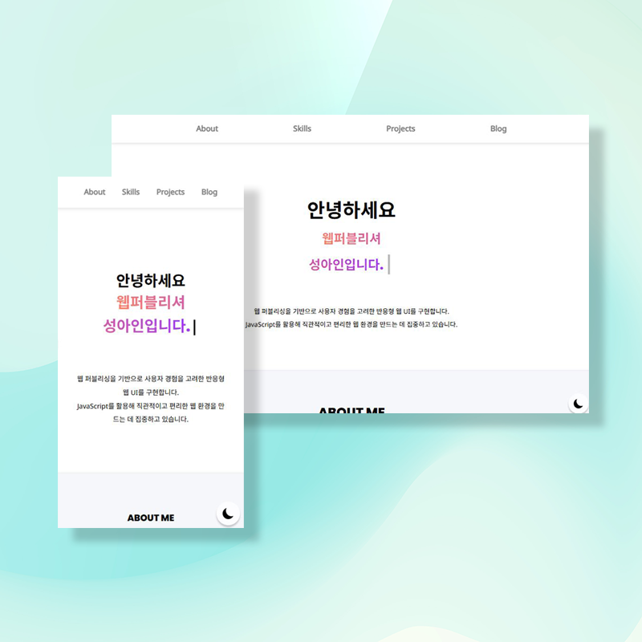
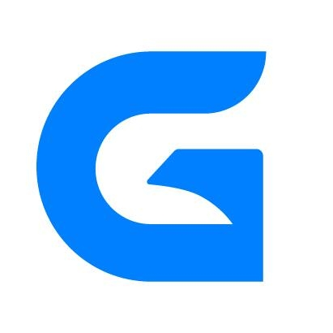

Skills & Tools
아래의 기술들을 사용할 수 있습니다.
- HTML5
- CSS3
- SCSS
- JavaScript
- jQuery
- React
- PHP
- MySQL
- Firebase
 Vercel
Vercel- Github
- Figma
- PhotoShop
- Illustrator
- ✔ React 기반 컴포넌트 UI 개발 및 상태 관리
- ✔ JavaScript를 활용한 사용자 인터랙션 구현
- ✔ HTML·CSS·SCSS 기반 반응형 웹 퍼블리싱
- ✔ 데이터 구조(JSON, REST API, SQL)를 활용한 화면 구성 경험
- ✔ Firebase·MySQL 기반 데이터 처리 및 활용
- ✔ PHP 기반 CRUD 및 게시판 기능 구현
- ✔ Git 버전 관리 및 Vercel·닷홈을 활용한 웹 서비스 배포 경험
Projects

반응형 영화 사이트
바로가기
TMDB API 기반 영화 커뮤니티 웹서비스
[핵심 기술]
JavaScript | API | MySQL | PHP다이소몰 리뉴얼
바로가기
팀 포트폴리오
[핵심 기술]
React | SCSS | MySQL | PHP
요넥스 PC 리뉴얼
바로가기
React 기반 컴포넌트 구조로 구현
[핵심 기술]
React | JavaScript | SCSS
위즈덤하우스 반응형 리뉴얼
바로가기
반응형 구조를 적용한 출판사 웹사이트 UI/UX 개선
[핵심 기술]
HTML | CSS | JavaScript | jQuery
에스티로더 모바일 리뉴얼
바로가기
모바일 UX 최적화 중심의 뷰티 브랜드 웹사이트 구현
[핵심 기술]
HTML | CSS | JavaScript | jQuery
포트폴리오 사이트
바로가기
반응형 개인 포트폴리오 사이트
[핵심 기술]
HTML | CSS | JavaScript | jQuery
Experience
Education

2025.12 -2026.06- • UI/UX 웹퍼블리셔 프론트개발 웹디자인&코딩 기획부터 포트폴리오 취업대비

2025.12 -2026.06